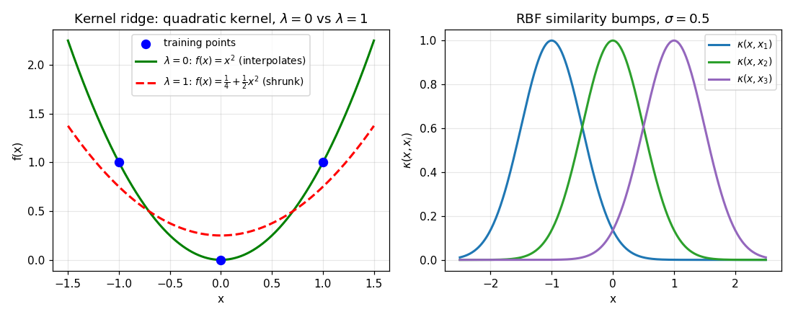

27. Kernel methods and kernel regression
Chapter 23’s closing message was that polynomial regression needs no new machinery — transform the features, run the same least-squares machine. §24.10 built the other half of the story: when the feature map \(\phi\) is expensive or even infinite-dimensional, the kernel trick lets you work with inner products \(\kappa(x, x')\) alone. This chapter joins the two: ridge regression in feature space, solved without ever visiting feature space. Everything here comes from the MLT Week 2 slides (the kernel machinery, recapped in §27.2) and the MLT Week 5 lectures and programming assignment on kernel regression (the model, the coefficient vector \(\alpha\), the weighted-sum predictions).
27.1 Notation
Notation. Data \(D = \{(x_1, y_1), \ldots, (x_n, y_n)\}\) with \(x_i \in \mathbb{R}^d\), \(y_i \in \mathbb{R}\) (subscript convention, Chapters 24–26). The kernel, Gram matrix, and feature map follow §24.10’s definitions exactly: \[\boxed{\kappa(x, x') = \phi(x)^T\phi(x')}, \qquad \boxed{K_{ij} = \kappa(x_i, x_j)} \in \mathbb{R}^{n \times n}, \qquad y = (y_1, \ldots, y_n)^T.\] \(\Phi\) is the \(n \times D\) feature matrix whose \(i\)-th row is \(\phi(x_i)^T\) (the §23.2 convention: rows are points), so \(\Phi\Phi^T = K\) and \((\Phi w)_i = w^T\phi(x_i)\). The Week 5 assignment’s \(w = \phi(X)\alpha\) is the same relation transposed.
27.2 The kernel machinery, briefly recapped
§24.10 derived the full machinery; here is only what kernel regression needs:
- Lifting. Map \(x \in \mathbb{R}^d\) through \(\phi: \mathbb{R}^d \to \mathbb{R}^D\) into a space where the structure is linear, then run linear methods there.
- The dual form. In kernel PCA, every eigenvector lay in the span of the data: \(w_k = X\alpha_k\). Regression will have the same shape: the solution \(w\) lies in the span of the transformed training points (§27.5).
- The kernel trick. Only inner products ever appear, so replace \(\phi(x_i)^T\phi(x_j)\) by \(\kappa(x_i, x_j)\), computed directly: \(\boxed{\text{polynomial } \kappa(x,x') = (x^Tx' + 1)^p}\), \(\boxed{\text{RBF } \kappa(x,x') = \exp(-\|x - x'\|^2/(2\sigma^2))}\). A kernel is valid iff it is symmetric and every Gram matrix is positive semi-definite (Mercer, §24.10).
- The point of the trick. For the quadratic kernel on \(\mathbb{R}^2\), \(\kappa(x,x') = (x^Tx' + 1)^2\) buys the 6-dimensional \(\phi\) at \(O(d)\) cost; the RBF kernel’s \(\phi\) is infinite-dimensional — no explicit \(\phi\) exists at all, yet \(\kappa\) computes the inner product in \(O(d)\).
Basically, … “Anything that only needs dot products of lifted features can run on kernel values instead.” Kernel regression is exactly such an algorithm.
27.3 Motivation: linear models are limited
§23’s machine fits \(f_\theta(x) = \theta^Tx\) — a line, or a hyperplane. Polynomial regression (§23.8) escapes lines by hand-building \(\phi(x) = (1, x, x^2, \ldots, x^m)^T\) and reusing the same machine. But:
- Explicit \(\phi\) scales badly. Cubic features of \(d\) variables number \(\approx O(d^3)\); each one costs a column in the feature matrix and a parameter in \(\theta\).
- Explicit \(\phi\) can be impossible. The RBF kernel’s \(\phi\) is infinite-dimensional (§24.10) — there is no finite feature vector to build. Yet it is a perfectly computable function: \(\exp(-\|x - x'\|^2/(2\sigma^2))\) is just arithmetic on two \(d\)-vectors.
- The dilemma is §24.10’s, again. There the answer was: find the dual form, then kernelize it. The Week 5 lectures motivate regression the same way — “impose structure to reduce search space” — and the structure here is ridge-regularized linear regression in feature space, with the kernel trick doing the heavy lifting.
Basically, … “You want curves, but you refuse to build the curve-features. Do linear regression in the imaginary lifted space anyway — arrange the algebra so the imaginary space only ever appears as \(\kappa(x, x')\), and it was never imaginary to begin with.”
27.4 Ridge regression in feature space: the objective
Start with §23.10’s ridge objective, but on the lifted features. Def (kernel ridge objective). For \(w \in \mathbb{R}^D\): \[\boxed{J(w) = \frac{1}{2}\sum_{i=1}^{n}\big(w^T\phi(x_i) - y_i\big)^2 + \frac{\lambda}{2}\|w\|^2}, \qquad \lambda > 0,\] i.e. \(J(w) = \frac{1}{2}\|\Phi w - y\|^2 + \frac{\lambda}{2}\|w\|^2\). It is §23.10’s objective with \(\phi(x_i)\) in place of \(x^i\) (the \(\frac{\lambda}{2}\) vs §23.10’s \(\lambda\) is the same bookkeeping choice as §23.1’s note — the constant in front never changes the minimizer).
Why ridge, not plain least squares? Two reasons, both sourced: §23.10 shows the \(\lambda I\) term guarantees a unique solution even when the feature matrix is rank-deficient (with an infinite-dimensional \(\phi\), rank considerations are hopeless), and the lecture promises \(\lambda\) “controls overfitting — too small \(\lambda\) could lead to a lot of overfitting, too large \(\lambda\) leads to underfitting.” The Week 5 lecture’s warning — “by memorizing, we can get zero error on training data; what we care about is test performance” — is exactly what the penalty term guards against.
Basically, … “Fit the lifted points with least squares, but charge \(\lambda\) for big weights. The charge does two jobs: it keeps the equations solvable and it stops the model from memorizing.”
27.5 The dual form: the solution lives in the span of the data
The gradient of \(J\) (§10.1’s recipe, as in §23.3): \[\nabla_w J = \sum_{i=1}^{n}\big(w^T\phi(x_i) - y_i\big)\phi(x_i) + \lambda w = \Phi^T(\Phi w - y) + \lambda w.\] Setting \(\nabla_w J = 0\) and solving for \(w\): \[\lambda w = \Phi^T(y - \Phi w) \quad\Rightarrow\quad \boxed{w = \Phi^T\alpha}, \qquad \alpha := \frac{y - \Phi w}{\lambda} \in \mathbb{R}^n.\] The optimal weight vector is a linear combination of the transformed training points: \[\boxed{w = \sum_{i=1}^{n}\alpha_i\,\phi(x_i)}.\] This is the regression twin of §24.10’s “every eigenvector is a linear combination of the data points” (\(w_k = X\alpha_k\)): the \(D\)-dimensional unknown \(w\) is parametrized by the \(n\) numbers \(\alpha_1, \ldots, \alpha_n\). And since \(J\) is a convex quadratic (Hessian \(\Phi^T\Phi + \lambda I\) is positive definite for \(\lambda > 0\)), the stationary point is the global minimum — §23.3’s argument, unchanged.
Basically, … “Don’t search all of \(\mathbb{R}^D\) for \(w\). The gradient equations force the answer to be a mix of the training points’ lifted features — so search the \(n\) mixing weights \(\alpha\) instead.”
27.6 The closed-form solution
Substitute \(w = \Phi^T\alpha\) into the definition \(\alpha = (y - \Phi w)/\lambda\): \[\lambda\alpha = y - \Phi\Phi^T\alpha = y - K\alpha,\] since \(\Phi\Phi^T\) is exactly the Gram matrix \(K_{ij} = \phi(x_i)^T\phi(x_j) = \kappa(x_i, x_j)\). Rearranging: \[\boxed{(K + \lambda I)\,\alpha = y}, \qquad \boxed{\hat\alpha = (K + \lambda I)^{-1}y}.\] Note (always solvable). \(K\) is positive semi-definite (Mercer, §24.10), so for \(\lambda > 0\) and \(z \ne 0\): \[z^T(K + \lambda I)z = \underbrace{z^TKz}_{\ge 0} + \underbrace{\lambda\|z\|^2}_{> 0} > 0,\] hence \(K + \lambda I\) is positive definite and invertible — the same one-line proof as §23.10’s homework for \(A^TA + \lambda I\).
The model at a new point \(x\) needs only \(\kappa\): \[f(x) = w^T\phi(x) = \alpha^T\Phi\phi(x) = \sum_{i=1}^{n}\alpha_i\,\phi(x_i)^T\phi(x) = \boxed{f(x) = \sum_{i=1}^{n}\alpha_i\,\kappa(x, x_i)}.\] The Week 5 assignment’s prediction loop is exactly this formula (\(\hat y_i = \sum_j \alpha_j\,\text{ker}(x_i, x_j)\)), and its \(\alpha = K^{-1}y\) is the \(\lambda \to 0\) limit of \(\hat\alpha = (K + \lambda I)^{-1}y\).
The kernel regression algorithm. Input \(D = \{(x_i, y_i)\}\), kernel \(\kappa\), \(\lambda > 0\): - Step 1: build \(K_{ij} = \kappa(x_i, x_j)\) (\(n^2\) kernel evaluations). - Step 2: solve \((K + \lambda I)\alpha = y\) for \(\alpha \in \mathbb{R}^n\). - Step 3: predict \(f(x) = \sum_i \alpha_i\,\kappa(x, x_i)\).
Basically, … “Two steps, no \(\phi\) anywhere: solve one \(n \times n\) linear system for \(\alpha\), then predict by adding up kernel values weighted by \(\alpha\). The lifted space was scaffolding — the building stands on \(\kappa\) alone.”
27.7 What it means: prediction as a weighted sum of similarities
Read \(f(x) = \sum_i \alpha_i\,\kappa(x, x_i)\) as a similarity-weighted vote:
- The kernel is a similarity score. \(\kappa(x, x_i)\) is large when \(x\) resembles the training point \(x_i\): for the RBF kernel it decays with distance \(\|x - x_i\|\); for the polynomial kernel it grows with alignment \(x^Tx_i\). A prediction is a weighted sum of “how similar is \(x\) to each training point,” with weights \(\alpha_i\).
- The weights can be negative. \(\alpha_i\) is not an importance score — it is a coefficient. In §27.8’s example, \(\alpha_2 = -1/4\) pulls the fit down near \(x_2 = 0\). Positive \(\alpha_i\) copies \(y_i\)’s influence up; negative \(\alpha_i\) pushes the opposite way.
- The kernel shapes the function. Polynomial kernel of degree \(p\): \(\kappa(x, x_i) = (x^Tx_i + 1)^p\) is a degree-\(p\) polynomial in \(x\), so \(f(x)\) is a degree-\(p\) polynomial — it searches the same curves as §23.8’s polynomial regression, minus the explicit features (Problem 5). RBF kernel: each term \(\alpha_i\exp(-\|x - x_i\|^2/(2\sigma^2))\) is a bump centered at \(x_i\) with width \(\sigma\) — the prediction is a sum of bumps, smooth and local: points far from all training data get near-zero contributions, and \(\sigma\) sets how far each bump reaches.
- The \(\lambda\) knob, in similarity language. \(\lambda \to 0\) forces \(f(x_i) \approx y_i\) at every training point — the bumps interpolate, memorizing (the Week 5 lecture’s zero-training-error memorizer). Larger \(\lambda\) shrinks every \(\alpha_i\) toward \(0\), flattening the fit — §23.10’s “too large \(\lambda\) leads to underfitting.”
Basically, … “To predict at \(x\): ask every training point ‘how similar am I to you?’ (\(\kappa(x, x_i)\)), multiply by its coefficient \(\alpha_i\), add up. Near neighbours dominate; strangers don’t vote.”
eg (RBF bumps). Training points \(x_1 = -1\), \(x_2 = 0\), \(x_3 = 1\), RBF kernel with \(\sigma = 0.5\): the three similarity functions \(\kappa(x, x_i)\) are bumps of height \(1\) at each training point, decaying to \(\exp(-(1)^2/(2\cdot 0.25)) = e^{-2} \approx 0.135\) one unit away. The prediction \(f(x) = \sum_i \alpha_i\kappa(x, x_i)\) stacks these bumps — wherever the training points are dense, the bumps add up; far away, all bumps die and the prediction fades to \(0\).

27.8 Worked example: kernel ridge by hand
Data: \(x_1 = -1\), \(x_2 = 0\), \(x_3 = 1\); \(y = (1, 0, 1)^T\). Quadratic kernel \(\kappa(x, z) = (xz + 1)^2\) (the same kernel as §24.10’s parabola example).
Step 1 — Gram matrix. \(K_{ij} = (x_ix_j + 1)^2\): \[K = \begin{pmatrix} 4 & 1 & 0 \\ 1 & 1 & 1 \\ 0 & 1 & 4 \end{pmatrix} \qquad \text{(eg } K_{11} = (1+1)^2 = 4,\ K_{13} = (-1+1)^2 = 0\text{).}\]
Step 2a — no regularization (\(\lambda = 0\), the assignment’s setting). Solve \(K\alpha = y\): \[\begin{cases} 4\alpha_1 + \alpha_2 = 1 \\ \alpha_1 + \alpha_2 + \alpha_3 = 0 \\ \alpha_2 + 4\alpha_3 = 1 \end{cases}.\] The data is symmetric in \(x_1 \leftrightarrow x_3\), so try \(\alpha_1 = \alpha_3 = a\), \(\alpha_2 = b\): \(4a + b = 1\) and \(2a + b = 0\). Subtracting: \(2a = 1\), so \(\boxed{\alpha = (1/2,\ -1,\ 1/2)^T}\). \[f(x) = \tfrac12(1 - x)^2 - 1 + \tfrac12(1 + x)^2 = x^2.\] Check: \(f(-1) = 1\) ✓, \(f(0) = 0\) ✓, \(f(1) = 1\) ✓ — with \(\lambda = 0\) the model interpolates: it threads all three points, training error \(0\). (It found \(y = x^2\), the exact parabola the points sit on — kernel regression with the quadratic kernel recovering what §23.8’s polynomial regression would fit.)
Step 2b — regularized (\(\lambda = 1\)). Solve \((K + I)\alpha = y\): \[\begin{pmatrix} 5 & 1 & 0 \\ 1 & 2 & 1 \\ 0 & 1 & 5 \end{pmatrix}\alpha = \begin{pmatrix} 1 \\ 0 \\ 1 \end{pmatrix}.\] Again \(\alpha_1 = \alpha_3 = a\): \(5a + b = 1\), \(2a + 2b = 0 \Rightarrow b = -a\), so \(4a = 1\): \(\boxed{\alpha = (1/4,\ -1/4,\ 1/4)^T}\). \[f(x) = \tfrac14(1 - x)^2 - \tfrac14 + \tfrac14(1 + x)^2 = \tfrac14 + \tfrac12x^2.\] Check on training points: \(f(-1) = 3/4\), \(f(0) = 1/4\), \(f(1) = 3/4\). Residuals \((-1/4,\ 1/4,\ -1/4)\) — the fit no longer interpolates; every coefficient shrank (\(|1/4| < |1/2|\), \(|{-}1/4| < |{-}1|\)), pulling the curve toward \(0\). The price of \(\lambda = 1\) is training error \(\frac{1}{4^2}\cdot 3/3 = 1/16\) per point; the purchase is a flatter, less committal model — §23.10’s trade in miniature.
Basically, … “Same data, same kernel, two \(\lambda\)’s: \(\lambda = 0\) memorizes the parabola through every point; \(\lambda = 1\) shrinks the weights and accepts small misses. That dial is the whole regularization story.”
27.9 Practical notes: the kernel, \(\lambda\), and the \(O(n^3)\) bill
Only what the sources support:
- Choosing the kernel = choosing the function’s shape. The polynomial kernel of degree \(p\) commits to degree-\(p\) polynomials — §23.8’s world, without the explicit features. The RBF kernel commits to smooth, local fits (sums of bumps, §27.7(iii)) and is the only option whose \(\phi\) cannot be built explicitly (§24.10). The course gives no kernel-selection procedure beyond this qualitative guidance — the disciplined way to compare choices is §23.9’s: fit candidates on training data, compare on held-out validation data.
- Choosing \(\lambda\). §23.10’s remark is the complete guidance: too small \(\lambda\) ⇒ near-interpolation, overfitting risk (the Week 5 lecture’s memorizer); too large \(\lambda\) ⇒ weights squeezed toward \(0\), underfitting. The assignment’s \(\alpha = K^{-1}y\) is the \(\lambda \to 0\) endpoint — used with
pinvthere precisely because \(K\) can be singular without the \(\lambda I\) term. - Computational cost. Step 1 costs \(n^2\) kernel evaluations; Step 2 solves an \(n \times n\) dense system — \(O(n^3)\), the same bill as §24.9’s \(n \times n\) eigendecomposition. The kernel trick removed the \(D\)-dependence (even infinite \(D\) is fine) but left an \(n\)-dependence: for very large \(n\), the \(O(n^3)\) solve is the bottleneck. The lectures give no alternative here — no low-rank or iterative shortcut appears in these sources.
- What centering? None. §24.10 centered the Gram matrix because PCA needs zero-mean data; kernel regression has no such requirement — the algorithm of §27.6 uses \(K\) as-is.
27.10 Where this goes next
- Regularization, properly. §27.4 borrowed §23.10’s remark; Chapter 28 makes ridge and lasso a full subject — the bias–variance trade-off, and how \(\lambda\) is actually chosen.
- The kernel trick, again. The pattern “$w = $ (span of data) + Gram matrix \(K\)” appeared twice now (§24.10’s \(w_k = X\alpha_k\), §27.5’s \(w = \Phi^T\alpha\)). Chapters 32–33 (hard/soft-margin SVM) run it a third time, for classification.
- From bumps to neurons. The RBF picture — predictions as weighted sums of local bumps — is worth keeping in mind for Part VI: a neural network’s hidden layer will build its predictions out of learned, adaptive “bumps” instead of fixed kernel ones.
Problem set
- Cubic-kernel \(\phi\), by hand (the assignment’s kernel). For scalar \(x, z\), expand \(\kappa(x, z) = (xz + 1)^3\) fully and exhibit an explicit \(\phi: \mathbb{R} \to \mathbb{R}^4\) with \((xz + 1)^3 = \phi(x)^T\phi(z)\).
- Guided derivation. Starting from \(J(w) = \frac12\|\Phi w - y\|^2 + \frac{\lambda}{2}\|w\|^2\) with \(\Phi\) the \(n \times D\) feature matrix: (i) compute \(\nabla_w J\); (ii) show the stationary point satisfies \(w = \Phi^T\alpha\) for some \(\alpha \in \mathbb{R}^n\); (iii) substitute to get \((K + \lambda I)\alpha = y\); (iv) argue \((K + \lambda I)\) is invertible for \(\lambda > 0\).
- Kernel ridge numeric. Data \(x_1 = 0\), \(x_2 = 2\); \(y = (2, 4)^T\); kernel \(\kappa(x, z) = xz + 1\) (linear kernel with intercept); \(\lambda = 1\). (i) Write \(K\). (ii) Solve \((K + \lambda I)\alpha = y\). (iii) Write \(f(x)\) and simplify to a line; check \(f(0)\), \(f(2)\).
- Interpolation at \(\lambda = 0\). Assume \(K\) is invertible. (i) Show the \(\lambda \to 0\) solution \(\hat\alpha = K^{-1}y\) gives training predictions \(\hat y_i = y_i\) exactly (training error \(0\)). (ii) Connect this to the Week 5 lecture’s “by memorizing, we can get zero error on training data.”
- Polynomial kernel = polynomial regression. For scalar \(x\) and kernel \(\kappa(x, z) = (xz + 1)^p\): (i) show each \(\kappa(x, x_i)\) is a polynomial in \(x\) of degree \(\le p\); (ii) conclude \(f(x) = \sum_i \alpha_i\kappa(x, x_i)\) is a polynomial of degree \(\le p\); (iii) what does this say about kernel regression with this kernel vs §23.8’s polynomial regression?
- RBF \(\sigma\), qualitatively. With the RBF kernel, fix the data and \(\alpha\). (i) What happens to each term \(\alpha_i\kappa(x, x_i)\) as \(\sigma \to 0\)? (ii) As \(\sigma \to \infty\)? (iii) Which regime risks the memorizer of §27.4, and why?
- True or false, one-line justification: (i) Kernel regression ever needs the explicit \(\phi(x)\). (ii) \((K + \lambda I)\) is invertible for every \(\lambda > 0\). (iii) A negative \(\alpha_i\) means training point \(i\) was an outlier. (iv) The RBF kernel’s \(\phi\) can be written down as a finite vector. (v) Kernel regression with the linear kernel \(\kappa(x, z) = x^Tz\) (no \(+1\)) can learn a nonzero intercept.
- Cost accounting. For the §27.6 algorithm with \(n\) training points in \(\mathbb{R}^d\): (i) how many kernel evaluations does Step 1 need, and what is each evaluation’s cost for the RBF kernel? (ii) What is Step 2’s asymptotic cost? (iii) At prediction time, what does one \(f(x)\) cost?
Solutions
Attempt each problem first, then click a problem to reveal its worked solution.
Expand \((xz + 1)^3\) for scalars \(x, z\): \[(xz + 1)^3 = (xz)^3 + 3(xz)^2 + 3(xz) + 1 = x^3z^3 + 3x^2z^2 + 3xz + 1.\] Take \[\boxed{\phi(x) = \begin{pmatrix} x^3 \\ \sqrt{3}\,x^2 \\ \sqrt{3}\,x \\ 1 \end{pmatrix}}.\] Then \[\phi(x)^T\phi(z) = x^3z^3 + (\sqrt{3}x^2)(\sqrt{3}z^2) + (\sqrt{3}x)(\sqrt{3}z) + 1 = x^3z^3 + 3x^2z^2 + 3xz + 1 = (xz+1)^3 \;\checkmark\] This is the explicit 4-dimensional feature map behind the Week 5 assignment’s ker = ((xi.T@xj)+1)**3. Note the \(\sqrt{3}\) weights — the middle features must be scaled for the dot product to reproduce the kernel exactly (same point as §24.10’s \(\sqrt{2}\) factors).
(i) \(J(w) = \frac12(\Phi w - y)^T(\Phi w - y) + \frac{\lambda}{2}w^Tw\). Differentiating (the §23.3 calculation with \(\Phi\) in place of \(A\)): \[\nabla_w J = \Phi^T(\Phi w - y) + \lambda w.\] (Entrywise: \(\frac{\partial}{\partial w_k}\frac12\sum_i(\sum_j\Phi_{ij}w_j - y_i)^2 = \sum_i\Phi_{ik}(\Phi w - y)_i = [\Phi^T(\Phi w - y)]_k\); the penalty contributes \(\lambda w_k\).)
(ii) Setting \(\nabla_w J = 0\): \(\Phi^T(\Phi w - y) + \lambda w = 0\), i.e. \[\lambda w = \Phi^T(y - \Phi w) \quad\Rightarrow\quad \boxed{w = \Phi^T\alpha}, \qquad \alpha := \frac{y - \Phi w}{\lambda} \in \mathbb{R}^n.\] So the stationary point is a linear combination of the rows of \(\Phi\) — the transformed training points.
(iii) Substitute \(w = \Phi^T\alpha\) into the definition of \(\alpha\): \[\lambda\alpha = y - \Phi(\Phi^T\alpha) = y - (\Phi\Phi^T)\alpha = y - K\alpha,\] with \(K_{ij} = \phi(x_i)^T\phi(x_j) = \kappa(x_i, x_j)\). Hence \(\boxed{(K + \lambda I)\alpha = y}\).
(iv) \(K\) is positive semi-definite (Mercer, §24.10): \(z^TKz \ge 0\) for all \(z\). For \(\lambda > 0\) and \(z \ne 0\): \[z^T(K + \lambda I)z = z^TKz + \lambda z^Tz \ge 0 + \lambda\|z\|^2 > 0,\] so \(K + \lambda I\) is positive definite, hence invertible. \(\boxed{\hat\alpha = (K + \lambda I)^{-1}y}\) — the same one-line proof as §23.10’s homework for \(A^TA + \lambda I\).
(i) \(\kappa(x, z) = xz + 1\): \[K = \begin{pmatrix} 0\cdot 0 + 1 & 0\cdot 2 + 1 \\ 2\cdot 0 + 1 & 2\cdot 2 + 1 \end{pmatrix} = \boxed{\begin{pmatrix} 1 & 1 \\ 1 & 5 \end{pmatrix}}.\]
(ii) With \(\lambda = 1\): \[K + I = \begin{pmatrix} 2 & 1 \\ 1 & 6 \end{pmatrix}, \qquad \det = 12 - 1 = 11, \qquad (K+I)^{-1} = \frac{1}{11}\begin{pmatrix} 6 & -1 \\ -1 & 2 \end{pmatrix}.\] \[\hat\alpha = \frac{1}{11}\begin{pmatrix} 6 & -1 \\ -1 & 2 \end{pmatrix}\begin{pmatrix} 2 \\ 4 \end{pmatrix} = \frac{1}{11}\begin{pmatrix} 12 - 4 \\ -2 + 8 \end{pmatrix} = \boxed{\begin{pmatrix} 8/11 \\ 6/11 \end{pmatrix}}.\]
(iii) \(f(x) = \alpha_1\kappa(x, 0) + \alpha_2\kappa(x, 2) = \frac{8}{11}(x\cdot 0 + 1) + \frac{6}{11}(2x + 1)\): \[\boxed{f(x) = \frac{12}{11}x + \frac{14}{11}}.\] Check: \(f(0) = 14/11 \approx 1.27\) (vs \(y_1 = 2\)), \(f(2) = (24 + 14)/11 = 38/11 \approx 3.45\) (vs \(y_2 = 4\)). Both miss — regularization shrinks the fit, exactly as in §27.8. Note. The \(+1\) in the kernel is what permits a nonzero intercept: without it, \(\kappa(x, z) = xz\) gives \(f(x) = x(\sum_i\alpha_i x_i)\), always \(0\) at \(x = 0\).
(i) Training predictions are \(\hat y = K\hat\alpha\) (row \(i\): \(\hat y_i = \sum_j K_{ij}\hat\alpha_j = \sum_j\hat\alpha_j\kappa(x_i, x_j) = f(x_i)\)). With \(\hat\alpha = K^{-1}y\): \[\hat y = K(K^{-1}y) = y,\] so \(\boxed{\hat y_i = y_i}\) for all \(i\) — training error exactly \(0\).
(ii) The Week 5 lecture warned: “by memorizing, we can get zero error on training data.” \(\lambda = 0\) is that memorizer in kernel form — the model spends all its freedom hitting the training labels and says nothing about test points. The assignment’s pinv(K)@y is precisely this endpoint (with pinv standing in for \(K^{-1}\) when \(K\) is singular).
(i) \(\kappa(x, x_i) = (xx_i + 1)^p\) expands by the binomial theorem to \(\sum_{k=0}^{p}\binom{p}{k}(xx_i)^k\) — a polynomial in \(x\) of degree \(\le p\) (coefficients depend on \(x_i\)).
(ii) \(f(x) = \sum_i\alpha_i\kappa(x, x_i)\) is a sum of degree-\(\le p\) polynomials, hence a polynomial in \(x\) of degree \(\le p\).
(iii) Kernel regression with the degree-\(p\) polynomial kernel searches (a subset of) the same degree-\(p\) polynomials as §23.8’s polynomial regression — but without ever forming the \((1, x, \ldots, x^p)\) features. For large \(p\) or multivariate \(x\) (where explicit features number \(\approx O(d^p)\)), the kernel route is the only feasible one. The price: §23.8’s explicit \(\theta\) is interpretable coefficient-by-coefficient, while kernel regression’s \(\alpha\) is not.
(i) \(\sigma \to 0\): \(\kappa(x, x_i) = \exp(-\|x - x_i\|^2/(2\sigma^2)) \to 1\) if \(x = x_i\) and \(\to 0\) otherwise — each bump collapses to a spike at its training point. The prediction becomes a sum of isolated spikes.
(ii) \(\sigma \to \infty\): \(\kappa(x, x_i) \to 1\) for every \(x\) — each bump flattens to a constant, and \(f(x) \to \sum_i\alpha_i\), a constant function.
(iii) The \(\sigma \to 0\) regime risks the §27.4 memorizer: each training point gets its own private spike, so the model can hit every training label exactly (\(f(x_i) \approx \alpha_i\)) while predicting near-zero everywhere else — zero training error, useless generalization. Narrow bumps = high capacity, same disease as §23.9’s degree-4 polynomial.
- False. The algorithm (§27.6) evaluates \(\kappa\) only — Step 1 builds \(K_{ij} = \kappa(x_i, x_j)\), Step 3 sums \(\alpha_i\kappa(x, x_i)\). No \(\phi(x)\) is ever formed; that is the kernel trick’s whole point.
- True. \(K\) is PSD and \(\lambda > 0\); \(z^T(K + \lambda I)z = z^TKz + \lambda\|z\|^2 > 0\) for \(z \ne 0\), so \(K + \lambda I\) is positive definite ⇒ invertible (the §27.6 Note).
- False. Negative weights are ordinary coefficients, not outlier flags: §27.8’s \(\alpha_2 = -1/4\) simply pulls the fit down near \(x_2 = 0\).
- False. §24.10: the RBF kernel’s \(\phi\) is infinite-dimensional — no finite vector exists. The kernel computes the inner product anyway.
- False. \(f(x) = \sum_i\alpha_i x^Tx_i = x^T(\sum_i\alpha_i x_i)\) satisfies \(f(0) = 0\) for every \(\alpha\) — homogeneous linear, no intercept. The \(+1\) in \((x^Tx' + 1)^p\) is what smuggles the intercept in (see Problem 3’s Note).
(i) Step 1 fills an \(n \times n\) matrix: \(n^2\) kernel evaluations (\(n(n+1)/2\) distinct, by symmetry). Each RBF evaluation computes \(\|x - x'\|^2\) — \(O(d)\) arithmetic.
(ii) Solving the dense \(n \times n\) system \((K + \lambda I)\alpha = y\): \(\boxed{O(n^3)}\) — the same bill as §24.9’s \(n \times n\) eigendecomposition. The kernel trick killed the \(D\)-dependence (even infinite \(D\) is fine) but left the \(n\)-dependence.
(iii) One prediction \(f(x) = \sum_{i=1}^{n}\alpha_i\kappa(x, x_i)\) needs \(n\) kernel evaluations: \(\boxed{O(nd)}\) for the RBF kernel — linear in the training-set size, the price of the “sum of similarities” form.